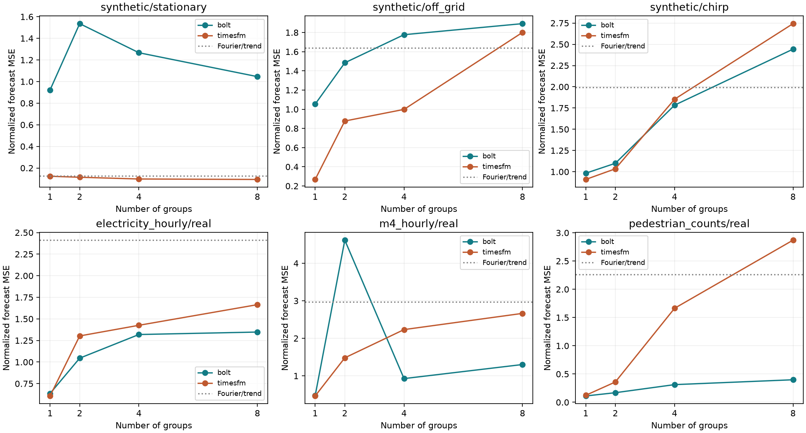
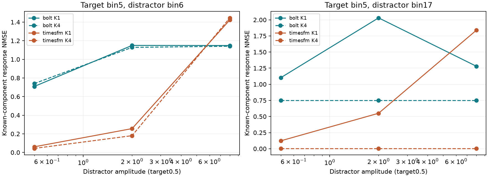
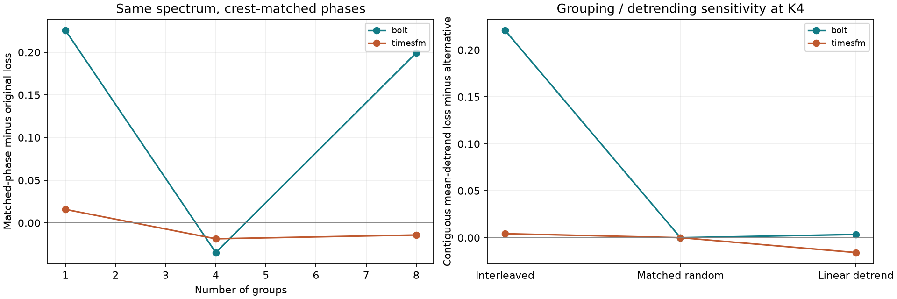

A past-only Fourier adapter, two frozen models, 16 synthetic seeds and 24 new cached real sources. Every decomposition preserves the observed signal. The adapter has no access to true generator frequencies or future values.
Bounded proof of concept. Half the sources form a fixed check set. Both beneficial and harmful changes are retained. These real sources have unknown pretraining overlap. Results are exploratory; intervals are unadjusted, descriptive source bootstraps, not population or multiple-testing claims.

K1 is native forecasting; K2/K4/K8 sum forecasts of progressively separated spectral groups with duplicate F(0) bias removed. Frequency groups retain all input energy. More groups need not improve fidelity. Linear-detrend sensitivity, raw sums, per-node interactions and first threshold crossings are retained in the records. A threshold crossing is not proof of semantic interpretability.
| Fixed check condition | Bolt K4 gain | TimesFM K4 gain |
|---|---|---|
| m4_hourly/real | -0.4536 [-1.2008, +0.2935] | -1.7680 [-2.1387, -1.4104] |
| monash_electricity_hourly/real | -0.6829 [-1.0714, -0.3250] | -0.8184 [-1.0045, -0.6266] |
| monash_pedestrian_counts/real | -0.2006 [-0.4710, -0.0352] | -1.5403 [-1.6873, -1.3772] |
| synthetic/chirp | -0.8012 [-1.1000, -0.5554] | -0.9445 [-1.3670, -0.5082] |
| synthetic/coupled | -0.2514 [-0.7358, +0.3111] | +0.2474 [+0.1261, +0.3593] |
| synthetic/off_grid | -0.7237 [-1.0056, -0.4276] | -0.7303 [-1.1100, -0.4180] |
| synthetic/phase_coherent | +0.5462 [+0.4197, +0.6797] | +0.1599 [+0.0969, +0.2265] |
| synthetic/phase_matched | -0.0837 [-0.2093, +0.0414] | +0.0598 [+0.0284, +0.0894] |
| synthetic/stationary | -0.3441 [-0.6690, -0.0405] | +0.0254 [+0.0022, +0.0519] |
Positive gain means lower error after decomposition; negative means harm. Brackets show conditional, unadjusted95% source-bootstrap intervals. Synthetic conditions have8 independent check seeds; real datasets have4 check sources each. Different conditions from one seed are dependent.

Target amplitude0.5 and noise0.05 remain fixed while distractor amplitude changes. Scores compare the actual forecast change under paired +/- additions with their known future contribution. This is behavioral evidence; neither native normalization nor internal interference is isolated causally. For the distant on-grid distractor, K4 puts the target and distractor into different groups; identical target-group inputs across amplitudes make the adapter response amplitude-invariant by construction. Its actual response accuracy, and the difference from native behavior, remain measured outcomes. The nearby pair shares one group and is not separated by this tree.
| Fixed check dataset | Bolt native → K4 | TimesFM native → K4 |
|---|---|---|
| monash_electricity_hourly | 0.7356 → 0.9770 | 0.7354 → 0.2302 |
| m4_hourly | 1.3256 → 1.4601 | 1.0377 → 0.4247 |
| monash_pedestrian_counts | 0.6810 → 2.1081 | 0.6644 → 0.2351 |
Known-addition response NMSE, averaging signs within source. Lower is better. These are controlled additions to real signals, not estimates of their unknown latent components. In this pilot, better TimesFM component-response fidelity coexists with worse total forecasting: response consistency is not a proxy for forecast quality. A post-hoc model-free periodic128 continuation control is also saved: it reproduces the on-grid addition by construction and diagnoses the three-peak baseline’s selection failure under the strongest nearby distractor; it is not evidence of strong real-data forecasting.

The matched-phase comparison preserves Fourier magnitudes and approximately preserves crest factor. Mean effects can cancel heterogeneous seed effects; full paired intervals are retained in the summaries. Grouping controls are input interventions, not internal causal localization. Equal nominal K need not mean equal numbers of nonzero groups on sparse synthetic signals; active group counts and component RMS are retained for every row, so that confound must be checked before interpreting a grouping effect.
23 prespecified model/condition contrasts exceed0.10 in absolute magnitude with the same sign in discovery and check. These nominate later replication; none triggers additional compute here. All conditions, including those missing that criterion, remain in the report. Grouping, phase and response comparisons are in the complete source records.
The phase controls preserve spectral magnitudes; matched-phase histories also match crest factor within3%. Alternative grouping trees reuse the exact same leaves and root. Their random grouping controls pass the fixed energy-matching gate, but on sparse stationary synthetic inputs they can merely move zero-energy leaves between groups. Effective group-input change is separately recorded; a degenerate random control cannot establish grouping specificity. On the real rows, effective changes must be checked individually. Off-grid frequencies, chirps and coupled components challenge the Fourier representation itself. The history-selected Fourier/trend and seasonal baselines use no oracle frequencies.
protocol.json · audit.json · independent_audit.json · bolt_summary.json · timesfm_summary.json · paired_models.json · candidates.json
All node inputs and forecasts are retained in the run. Model-free replay checks hashes, finite forecasts, exact K1 identity, input reconstruction and telescoping of node forecast changes. No new SAE, internal patch, larger grid or additional native model is trained or run. See README for commands and limitations.